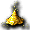
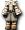
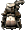

漢德哥布林
我們伺服器實際的怪物設定（不是日版 wiki 的資料）。
能力值
| 等級 | 11 |
| HP | 387～489 |
| AC | 72 |
| MC | 95 |
| 經驗值 | 960 |
| 金錢 | 200～200 |
出現地圖
| 地圖 | 數量 | 出現位置 |
| 米魯里斯森林4 | 92 | 整張地圖 |
掉落道具
| 道具 | 基本機率 |
 強力生命之水 強力生命之水 | 5% |
 強力魔力之水 強力魔力之水 | 5% |
 世界樹的葉子 世界樹的葉子 | 5% |
 卡普里科之鎚 卡普里科之鎚 | 0.5% |
| [16]哥布林變身捲軸 | 0.25% |
| 魔法環扣腰帶 | 0.15% |
 金屬翡翠 金屬翡翠 | 0.4% |
 純金粉 | 0.15% |
| [16]哥布林變身捲軸 | 0.5% |
| 燎炎之戒 | 0.15% |
| [11]貳式護肩材料A | 0.3% |
| [12]壹式劍卡材料C | 0.1% |
| [12]伍式劍卡材料C | 0.1% |
| [99]柒式劍卡材料B | 0.1% |
| [110]蒂拉諾變身捲軸 | 0.1% |
| [3次]鎧甲3階段升級捲軸 | 0.1% |
 塞汀罩袍 塞汀罩袍 | 0.05% |
| 康加鼓製造法 | 0.3% |
| 泰特拉鎖子甲AG | 0.05% |
 泰特拉夜行衫AG | 0.05% |
 泰特拉光之盜王服UG | 0.05% |
| 泰特拉魔導士之袍UG | 0.05% |
 泰特拉地之大師禮服 泰特拉地之大師禮服 | 0.05% |
 泰特拉聖潔騎士甲AG 泰特拉聖潔騎士甲AG | 0.05% |
| 泰特拉大師精煉 | 0.05% |
 泰特拉梅汀法札德UG 泰特拉梅汀法札德UG | 0.05% |
 泰特拉女劍士鍊甲UG 泰特拉女劍士鍊甲UG | 0.05% |
| 泰特拉女助祭之袍AG | 0.05% |
| 泰特拉蘭博罩袍UG | 0.05% |
| 泰特拉尼姆碎片 | 0.3% |
| 促進劑處方2 | 0.1% |
| 分離劑處方2 | 0.1% |
| 增強精華處方2 | 0.1% |
| 抗菌精華處方2 | 0.1% |
| 促進精華處方2 | 0.1% |
| 促進精華處方3 | 0.1% |
 信件[任務專用] 信件[任務專用] | 0.05% |
| 防禦鞋罩製造法 | 0.3% |
| 防禦鞋製造法 | 0.3% |
 聖職者鎧甲 2 階段製造法（女） 聖職者鎧甲 2 階段製造法（女） | 0.3% |
| WIS增幅器 2 階段製造法 | 0.3% |
| 黑暗墜擊 | 0.1% |
 體力之捲軸-閻 體力之捲軸-閻 | 0.1% |
| 騎士製造工具組 | 0.3% |
| 橄欖賽恩斯製造法 | 0.3% |
| HIT增幅器 5 階段製造法 | 0.3% |
 黃色神器 黃色神器 | 0.1% |
| 元素寶石 2 階段製造法 | 0.3% |
| 元素寶石 5 階段製造法 | 0.3% |
| MHIT極大器 1 階段製造法 | 0.3% |
| 紅色熊貓帽製造法 | 0.3% |
| MAC減幅器 3 階段製造法 | 0.3% |
| STR／CON增幅器 2 階段製造法 | 0.3% |
 挑戰熊貓帽 挑戰熊貓帽 | 0.05% |
| 經驗豪豬指虎 | 0.05% |
| 經驗匕首 | 0.05% |
| STR增幅器 1 階段製造法 | 0.1% |
| 轉職的獎賞 | 0.1% |
| DEX增幅器 3 階段製造法 | 0.3% |
 鞋子製造法 鞋子製造法 | 0.3% |
| 超級炸彈 3 階段製造法 | 0.3% |
| 忘卻之背刺彎刀製造法 | 0.3% |
| 蛇鞭製造法 | 0.3% |
| [Lv2泰特拉鎧甲]升級券 | 0.1% |
| [Lv8泰特拉鎧甲AG]升級券 | 0.1% |
| [3次]短劍1階段升級捲軸 | 0.1% |
| [3次]寶珠3階段升級捲軸 | 0.1% |
| 戰士鎧甲 3 階段製造法（男） | 0.3% |
 超級WIS附魔 超級WIS附魔 | 0.1% |
 特製魔斯果汁製造法？ 特製魔斯果汁製造法？ | 0.1% |
| 速度之劍 | 0.05% |
基本機率再乘上伺服器的掉寶倍率；「隨機一件」是從一組道具裡抽一件。